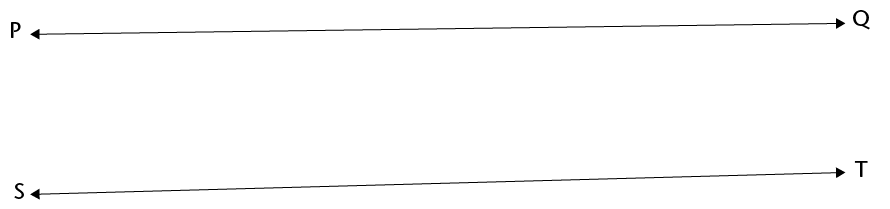

<div class="container">
  <div id="contents" class="col-md-12 main-content"><h1 xmlns="http://www.w3.org/1999/xhtml" id="toc-id-14">Meetkunde van reguit lyne</h1>
    <p xmlns="http://www.w3.org/1999/xhtml" class="Body-opener-no-indent">Jy weet waarskynlik presies
    wat met 'n "lyn" bedoel word. In hierdie hoofstuk gaan jy oor
    lynstukke en halflyne leer en hoe hulle van lyne verskil. Jy
    gaan ook meer leer oor ewewydige en loodregte lyne en hoe ons
    hulle in 'n diagram aandui.</p>
			
			
			    <h2 xmlns="http://www.w3.org/1999/xhtml" id="toc-id-15">Lynstukke, lyne en halflyne</h2>

    <h3 xmlns="http://www.w3.org/1999/xhtml" class="Head-investigation--after-b-head-">Lynstukke</h3>
			<ol xmlns="http://www.w3.org/1999/xhtml"><li>
			<p class="Body-investigation">	Meet elke sy van hierdie
    vierhoek. Skryf die afmetings by elke sy neer.</p><p class="Body-no-indent"></p>
    <p class="Body-no-indent">Elke sy van 'n vierhoek is 'n
    <b>lynstuk</b>.</p>

			<p class="Body-no-indent"></p>
			 <div class="note">
      <p class="Body-content-no-indent">'n <b>Lynstuk</b> het 'n
      bepaalde beginpunt en 'n bepaalde eindpunt. Ons kan lynstukke
      trek en meet.</p>
    </div></li>
			
    <li><p class="Body-investigation">	Trek 'n lynstuk wat 12 cm lank
    is.
</p></li></ol>
<h3 xmlns="http://www.w3.org/1999/xhtml" class="Head-investigation">Lyne en halflyne</h3>

    <p xmlns="http://www.w3.org/1999/xhtml" class="Body-no-indent para-style-override-7">Ons kan aan
    lyne dink wat nie 'n begin of einde het nie, alhoewel ons hulle
    nie volledig kan trek nie. Ons trek dus lynstukke om lyne voor
    te stel. Wanneer ons 'n lynstuk trek om 'n lyn voor te stel,
    kan ons pyltjies by albei punte sit om te wys dat die lyn
    onbepaald by albei punte voortgaan.</p>
			<p xmlns="http://www.w3.org/1999/xhtml" class="Body-no-indent"></p>
			<div xmlns="http://www.w3.org/1999/xhtml" class="note">
      <p class="Body-content-no-indent">Die woord <b>lyn</b> word
      gebruik om 'n lyn aan te dui wat in albei rigtings voortgaan.
      Ons kan net 'n deel van 'n lyn sien en trek. 'n Lyn kan nie
      gemeet word nie.</p>
    </div>
						<ol xmlns="http://www.w3.org/1999/xhtml"><li><p class="Body-investigation">Trek lyn AB.</p>
			<p class="Body-no-indent"></p></li>
			<li><p class="Body-investigation">	Het jy die hele lyn AB getrek?
    Verduidelik.</p><hr/>
			

 <div class="note">
      <p class="Body-content-no-indent"><span>Ons kan ook aan 'n
      lyn dink wat 'n bepaalde beginpunt het maar onbepaald
      voortgaan by die ander punt. Dit word 'n</span> <span class="char-style-override-13">halflyn</span> <span>of 'n</span>
      <b>straal</b> <span>genoem</span>.</p>
    </div>
						
    <p class="Body-no-indent para-style-override-7">Ons kan die
    beginpunt en 'n deel van 'n halflyn trek en 'n pyltjie gebruik
    om aan te dui dat dit by die een punt aangaan.</p>

    <p class="Body-no-indent para-style-override-7">Halflyn PQ gaan
    na regs aan:</p>
			<p class="Body-no-indent"></p>
	<p class="Body-no-indent para-style-override-7">Halflyn DC gaan
    na links aan:</p>

			<p class="Body-no-indent&#10;para-style-override-1"></p></li>
			<li><p class="Body-investigation">	 Trek halflyn EF.</p>
			<p class="Body-investigation"></p></li>
			<li><p class="Body-investigation">	Het jy die hele halflyn EF
    getrek? Verduidelik.</p>
			<hr/></li><li>
<p class="Body-investigation">	Kruis lynstukke XY en GH
    êrens?</p>
			<div class="frame-2">
				</div><hr/></li>
			<li>
<p class="Body-investigation-hanging">	Kruis lyne KL en NP
    êrens?</p>
			<div class="frame-2">
				</div>
			<hr/></li><li>
<p class="Body-investigation">	Kruis halflyne AB en CD
    êrens?</p>
			<div class="frame-2">
				</div><hr/></li>
			<li>
<p class="Body-investigation">	 Kruis halflyne FT en MW
    êrens?</p>			<div class="frame-2">
				</div><hr/>
			</li>
<li>
<p class="Body-investigation">	Kruis halflyne JK en RS
    êrens?</p>			<div class="frame-2">
				</div><hr/>
			</li>
</ol>
			<h2 xmlns="http://www.w3.org/1999/xhtml" id="toc-id-16">Ewewydige en loodregte lyne</h2>

    <h3 xmlns="http://www.w3.org/1999/xhtml" class="Head-investigation--after-b-head-">Ewewydige lyne</h3>

    <p xmlns="http://www.w3.org/1999/xhtml" class="Body-no-indent">Twee lyne wat 'n konstante afstand
    uitmekaar is, word <b>ewewydige lyne</b> genoem. Lyne AG en BH
    hier onder is ewewydig. Ons skryf AG <span>||</span> BH.</p>

			<p xmlns="http://www.w3.org/1999/xhtml" class="Body-no-indent"><span></span> </p>
			<ol xmlns="http://www.w3.org/1999/xhtml"><li><p class="Body-investigation">	Meet die afstand tussen die
    twee lyne:</p><ol>			<li><p class="ques-a--2-space-below">	 by A en B</p><hr/></li>
<li>
<p class="ques-a--2-space-below">by C en D</p>
			<hr/></li><li>
<p class="ques-a--2-space-below">	by E en F</p>
			<hr/></li></ol>
<p class="Body-no-indent">Hier is nog ewewydige lyne: </p>
			<p class="Body-no-indent para-style-override-1"><span></span></p>
			</li><li><p class="Body-investigation">	Trek twee ewewydige lyne.</p>			<p class="Body-no-indent"><span></span> </p></li>

			<li><p class="Body-investigation">	Trek drie lyne wat ewewydig
    aan mekaar is.</p>			<p class="Body-no-indent"><span></span> </p></li>

			<li><p class="Body-investigation">	Sal ewewydige lyne
    êrens kruis? Verduidelik.</p>
			<hr/></li>
<li>
<p class="Body-investigation">Dink jy lyne PQ en ST is
    ewewydig? Hoe kan jy kontroleer?</p>			<p class="Body-no-indent"><span></span> </p>
			<hr/></li>
<li><ol><li>
<p class="ques-a-">	Trek twee lyne wat amper ewewydig is,
    maar nie heeltemal nie.</p>			<p class="Body-no-indent"><span></span> </p></li>

		<li>	<p class="ques-a-">		Beskryf wat jy gedoen het om seker te
    maak dat jou twee lyne nie ewewydig is nie.</p>
			<hr/></li></ol></li>
<li>
<p class="Body-investigation para-style-override-7"> Kan twee lynstukke ewewydig
    wees?</p>
			<div class="Basic-Text-Frame frame-190">
				<hr/></div></li>
<li>
			<p class="Body-investigation para-style-override-7">
Is lynstukke DK en FS
    ewewydig?</p>			<div class="frame-2">
				</div>
			<hr/></li>
<li>
<p class="Body-investigation">	 Is lynstukke MN en AB
    ewewydig?</p>			<p class="Body-no-indent para-style-override-32"><span></span> </p>
			<hr/></li>
<li>
<p class="Body-investigation-hanging">Wat kan jy doen sodat
    jy beter in staat sal wees om te kontroleer of die twee
    lynstukke hier bo ewewydig is of nie?</p>
			<hr/></li><li>
<p class="Body-investigation">	Kan 'n lyn op sy eie ewewydig
    wees?</p>			<p class="Body-no-indent"><span></span> </p>
			<hr/></li>
<li>
<p class="Body-investigation para-style-override-1">	 Trek 'n
    lyn wat ewewydig is aan lyn XY hier bo.</p></li></ol>
    <h3 xmlns="http://www.w3.org/1999/xhtml" class="Head-investigation">Loodregte lyne</h3>

    <p xmlns="http://www.w3.org/1999/xhtml" class="Body-no-indent">Lyne CD en KL hier onder is loodreg
    op mekaar. Ons skryf CD <span class="char-style-override-8">⊥</span> KL.</p>
			<p xmlns="http://www.w3.org/1999/xhtml" class="Body-no-indent"><span></span></p>
			<ol xmlns="http://www.w3.org/1999/xhtml"><li><p class="Body-investigation">	Hoeveel hoeke word gevorm by
    die punt waar die twee lyne hier bo kruis?</p>
			<hr/><div class="note"><p class="Body-content-no-indent">Twee lyne wat regte hoeke
      vorm is <b>loodreg</b> op mekaar.</p>
						</div></li>

						
					<li>	<p class="Body-investigation">
Trek twee halflyne wat dieselfde beginpunt het.</p><hr/></li>
			<li>
			<p class="Body-investigation">	Trek twee halflyne wat loodreg
    op mekaar is en dieselfde beginpunt het.</p><hr/></li>
			<li><p class="Body-investigation">	Trek twee halflyne wat kruis,
    maar nie by hulle beginpunte nie.</p><hr/></li>
			<li>	<p class="Body-investigation-hanging">	 Trek twee halflyne wat
    kruis, maar nie by hulle beginpunte nie en wat loodreg op
    mekaar is.</p><hr/></li>
			<li><p class="Body-investigation-hanging"> Kan jy twee halflyne
    trek wat dieselfde beginpunt het en ewewydig aan mekaar is?</p>
<hr/></li></ol>

  </div>
</div>